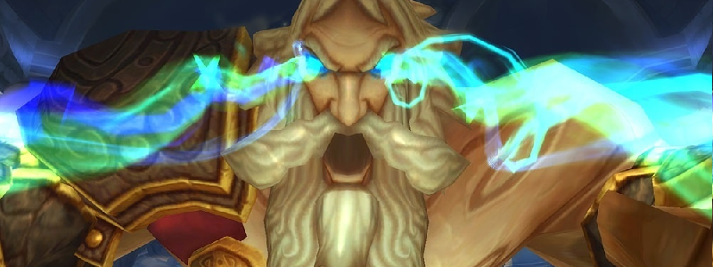

Kologarn

Overview
Kologarn has a chest and two arms. Each of them has a separate HP bar, and his Arms can regrow.
This fight is simply a coordination check of DPSing the right target among these three options and ensuring Tanks communicate properly.
The fight ends when Kologarn’s Chest (Will be referred from this point on as “Kologarn”) reaches 0 HP. If an Arm dies, the chest instantly takes half the damage the Arm has suffered before dying (so, 50% of the Arm’s max HP)
Full Mechanics Rundown
- The fight ends when Kologarn’s Chest (Will be referred from this point on as “Kologarn”) reaches 0 HP. If an Arm dies, the chest instantly takes half the damage the arm has suffered before dying (so, 50% of the Arm’s max HP) but Adds will be spawned on the position of the Arm. Kologarn will also lose an ability until his Arm has regrown (with full HP):
- His Right Arm’s ability (Note: Since he’s facing you, that’s your left) is Stone Grip. The Right Arm grabs 3 random Players, entirely incapacitating them and dealing heavy damage over time. Dealing enough damage to the Right Arm will free the Players, and failing to free them will instantly kill them instead after a short duration.
- Right Arm will always be #1 DPS target when it grips someone.
- His Left Arm’s ability (Note: Since he’s facing you, that’s your right!) is Shockwave. This is simply a heavy, instant Raid-Wide burst of damage (40-70% HP) which causes no problem if Players aren’t taking damage from other mechanics.
- Removing both Arms will disable both these abilities indeed, but will cause Kologarn to shout on the Raid (after all, he can’t attack with his Arms anymore) for heavy Raid-wide damage. This is generally something we’ll avoid, even though it’s certainly not an instant wipe.
- Removing any Arm will cause Rubble (Adds) to spawn. These are not to be taken lightly: They deal reasonable damage to their target and heavy AoE damage around themselves. They should be killed A.S.A.P, preferably by Ranged DPS, as Melee DPS might get killed by their AoE.
- Kologarn himself has a few abilities that he’ll use independently of his Arms:
- He’ll Sunder Armor his current Tank every now and then, easily solved by a Tank swap. Tanks should preferably have no stacks when it is decided to kill an Arm, so that they can safely handle the Rubble Adds.
- He’ll Smash in front of him, dealing low damage to anyone in melee range of him and Interrupting them. All Casters and Healers therefore have to stay out. (This is apparently the same ability as his Sunder Armor? Must check.)
- He’ll use Focused Eyebeam a random Player that is not in his melee range (if everyone is in melee, he’ll do it on a melee instead, and we don’t want that). The Beam deals heavy damage (enough to kill when added to other sources of damage) but can be out-ran if the Player keeps moving. If the Raid isn’t under pressure, it can be healed through, and defensives (like Iceblock) will work. The chased Player should be cautious to not bring the Beam into any allies, and to not run into Rubble Adds while running from the Beam.
Essentials
Tanks
- Communicate to ensure Kologarn’s Tank doesn’t have 3+ stacks of Sunder Armor (preferably swapping at 2 or even less) and the Rubble Adds Tank doesn’t have too many stacks and doesn’t bring Adds into melee range. They should be tanked where they spawn.
- Cooldowns can be used depending on the situation: Sunder Armor stacks, presence of Adds or not, Healers being Stone Gripped...
Healers
- Heal Gripped Players if you aren’t missing Line of Sight, Focused Beamed Players, Tanks and Melees accordingly to ensure they don’t die to Shockwave damage.
- Rumble Adds deal heavy damage to the Tank, so keep him topped. If Melees are near the Adds, though they shouldn't, be ready to AoE Heal.
- You can self-heal if chased by a Beam, mostly if a HPal since moving is bad for you.
DPS
- Listen to the calls for which target to focus DPS on. Right Arm will always be focused when Players are Stone Gripped, Adds will always be focused whenever they exist.
- Don’t go near Adds unless you’re a Plate and know what you’re doing (def CDs, healthstone…).
- Run away from Focused Beams without crossing other Players or Adds.
Special Assignments
Hunters should have Misdirect+Volley ready when Adds are about to spawn (when an Arm dies).
Hard Mode
There is no hard mode for this boss.